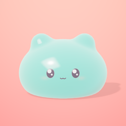

Política de Privacidade do ToyoToy
Última atualização: 7 de novembro de 2026 (revisão 3) · Aplicativo ToyoToy para iPhone e iPad, publicado por R.R - PROCESSAMENTO DE DADOS E SERVICOS SS LTDA.
Como o aplicativo funciona
O ToyoToy é um estúdio de brinquedos digitais. A criança cria squishies, slimes e outros brinquedos, escolhe materiais, brinca com eles na Casa ToyoToy, monta pequenas histórias, tira fotos dos brinquedos e gera moldes de papel. O aplicativo não se conecta a servidores nossos e não inclui ferramentas de análise de uso, publicidade ou rastreamento de terceiros.
Dados guardados no aparelho
- Brinquedos, turmas, a casa e suas histórias, fotos e vídeos do ToyoToy Snap, moldes em PDF e arquivos 3D ficam apenas no armazenamento do próprio aparelho.
- Nós não temos acesso a esses arquivos. Eles são apagados quando o aplicativo é removido.
- Como outros dados de aplicativos, eles podem entrar no backup do aparelho (iCloud ou computador) se o responsável tiver ativado esse backup nas configurações do sistema. Esse backup é controlado pela conta Apple do responsável, não por nós.
Permissões
- Câmera: não usada.
- Microfone e reconhecimento de fala (a partir da versão 2.1): opcionais, para a criança dizer o nome do brinquedo ou contar como imagina uma criatura. Ele só liga quando alguém toca no botão do microfone, e o iPhone ou iPad pede a permissão do sistema na primeira vez. A fala vira texto no próprio aparelho, pelo reconhecimento de fala local da Apple; o áudio não é gravado, não é guardado e não sai do aparelho. A escuta para sozinha em poucos segundos e quando o aplicativo sai da tela. Só o texto resultante é usado, no aparelho, como nome ou descrição do brinquedo. A voz dos brinquedos é gerada no próprio aparelho e não grava nada.
- Fotos: o ToyoToy não lê a Fototeca. Se um adulto escolher "Salvar imagem" ao compartilhar, o sistema pede permissão para adicionar aquela foto ou vídeo à Fototeca.
- Impressão: o painel de impressão do sistema (AirPrint) mostra apenas as impressoras da rede local.
Compras
O ToyoToy Premium é uma compra única, sem assinatura, processada pela Apple. Nós não recebemos nome, e-mail, cartão ou outros dados de pagamento. Antes de qualquer compra ou restauração aparece uma pergunta para adultos.
Compartilhamento e exportação
Nada sai do aplicativo sozinho. Para compartilhar ou salvar fotos, vídeos, moldes e arquivos 3D fora do ToyoToy, um adulto precisa responder a uma pergunta. Depois disso, o próprio sistema mostra para onde enviar. O destino escolhido segue a política de privacidade de quem o oferece.
Privacidade das crianças
O ToyoToy foi feito para crianças. Ele não pede nome, idade, e-mail, localização ou qualquer dado que identifique a criança, não tem bate-papo nem conteúdo publicado por outras pessoas, e não tem links para fora do aplicativo.
Este site
Estas páginas são hospedadas no GitHub Pages. Como qualquer servidor web, o GitHub registra o endereço IP de quem visita, por segurança, conforme a declaração de privacidade do GitHub. O site não usa cookies nem ferramentas de análise nossas.
Mudanças
Se o aplicativo passar a tratar dados de outra forma, esta página será atualizada antes, com a nova data no topo.
Contato
Dúvidas sobre privacidade: contato@usenagaveta.com.br
ToyoToy Privacy Policy
Last updated: November 7, 2026 (revision 3) · ToyoToy for iPhone and iPad, published by R.R - PROCESSAMENTO DE DADOS E SERVICOS SS LTDA.
How the app works
ToyoToy is a digital toy studio. Children make squishies, slimes and other toys, pick materials, play with them in the ToyoToy House, build little stories, take photos of their toys and create paper templates. The app does not connect to our servers and includes no third-party analytics, advertising or tracking.
Data kept on the device
- Toys, groups, the house and its stories, ToyoToy Snap photos and videos, PDF templates and 3D files stay only in the device's storage. We cannot access them, and they are deleted when the app is removed.
- Like other app data, they may be included in a device backup (iCloud or computer) if the parent has turned that on in system settings. That backup is controlled by the parent's Apple Account, not by us.
Permissions
- Camera: not used.
- Microphone and speech recognition (from version 2.1): optional, so the child can say the toy's name or tell how they imagine a creature. It only turns on when someone taps the microphone button, and the iPhone or iPad asks for the system permission the first time. Speech becomes text on the device, using Apple's on-device speech recognition; the audio is not recorded, not kept and never leaves the device. Listening stops on its own after a few seconds and when the app leaves the screen. Only the resulting text is used, on the device, as the toy's name or description. Toy voices are generated on the device and nothing is recorded.
- Photos: ToyoToy does not read the photo library. If a grown-up chooses "Save Image" while sharing, the system asks permission to add that photo or video.
- Printing: the system print panel (AirPrint) only lists printers on the local network.
Purchases
ToyoToy Premium is a one-time purchase, with no subscription, processed by Apple. We do not receive names, emails, cards or other payment data. A grown-up question appears before any purchase or restore.
Sharing and export
Nothing leaves the app on its own. To share or save photos, videos, templates and 3D files outside ToyoToy, a grown-up has to answer a question; the system then shows where to send them. The chosen destination follows its own privacy policy.
Children's privacy
ToyoToy is made for children. It never asks for a child's name, age, email, location or any identifying data, has no chat or content from other people, and has no links out of the app.
This website
These pages are hosted on GitHub Pages. Like any web server, GitHub logs visitors' IP addresses for security, as described in the GitHub privacy statement. The site uses no cookies or analytics of our own.
Changes
If the app ever handles data differently, this page will be updated first, with the new date at the top.
Contact
Privacy questions: contato@usenagaveta.com.br